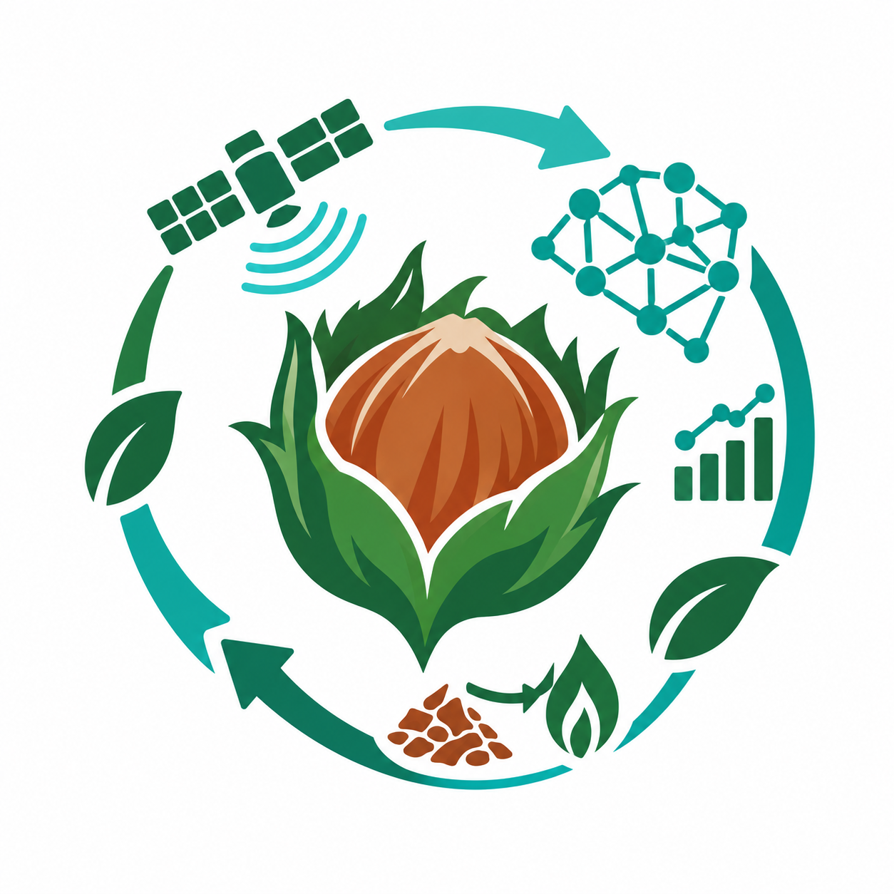

Ordu / Ünye Pilot Havzası • Fındık Zürufu Döngüsel Lojistik & Külleme Önleme Konsolu
Çiftçi karmaşık mobil uygulamalar indirmeden patoz bittiğinde tek tıkla konum atar.
Köylülerin %90'ının atığı yakmadan seve seve teslim etmesini sağlayan diyalog akışı:
Çevrimiçi | Ünye Ziraat Odası
Selamün aleyküm, Yazkonağı cami yukarısında patoz bitti. Yolu kapattık, 35 çuval gapçuk var. Traktör ne zaman gelir?
10:30Aleyküm selam Mustafa Dayı! Bildirimin alındı. Durak #1 olarak Ziraat Odası dinamik toplama rotasına eklendi.
Toplama Ekibi: Yarın 11:30 - 13:00 arası Yazkonağı hattında olacak.
Hava Uyarısı: Gece nem %85'e çıkıyor. Lütfen gapçuğu ateşe verme ve bahçedeki fındık ocaklarına dökme (külleme riski var).
Tamamdır, yolu açacaklarsa bekletiyorum, yakmıyorum. Teşekkürler.
10:32Kamyonun hemen ulaşamadığı yerlerde külleme mantarı patlamasını önleyen tahmin modeli.
Doğanın milyonlarca yıllık mantar mücadelesinden ilham alan hızlı biyo-kompostlama:
Güncel olarak sert fındık kabuğunun kilogram fiyatı yakıt talebi nedeniyle fındık fiyatını geçmiş, marketlerde paketle satılmaktadır. Toplanan gapçuk (züruf); Oltan Köleoğlu BES ve seralar için tonu ~2.200 TL değerinde hazır pelet biyoyakıtı hammaddesidir.
Çiftçiyi atığı yakmaya veya dereye dökmeye mecbur bırakmayan, 4 bileşenli adil değer takas modeli (Bölüm 5 Hesabı):
Gapçuk AI erken uyarı parametreleri, biyo-kompostlama reçetesi ve emisyon katsayıları aşağıdaki akademik ve sektörel kurumların araştırmalarına dayanmaktadır: